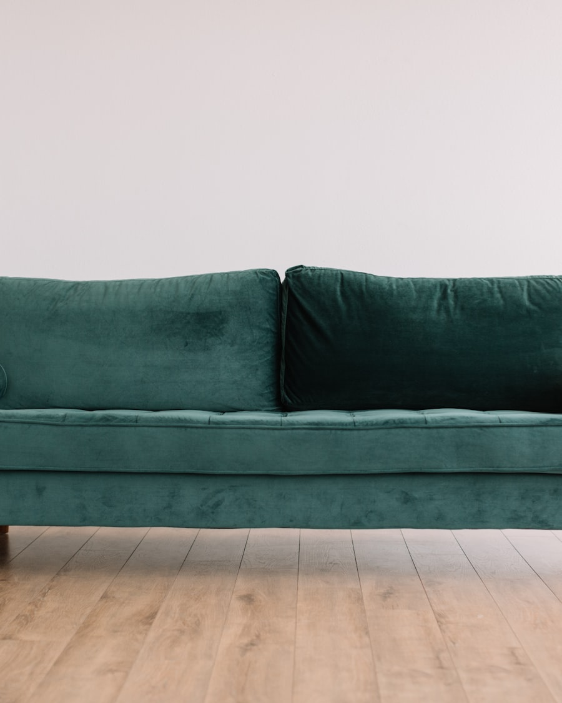
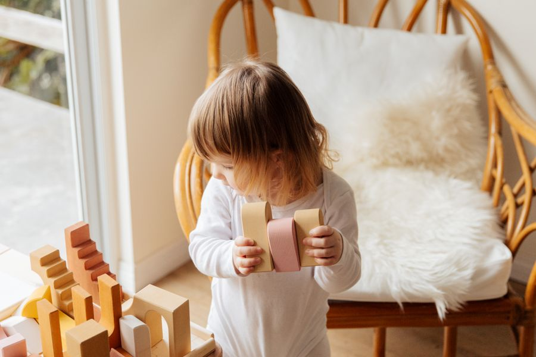
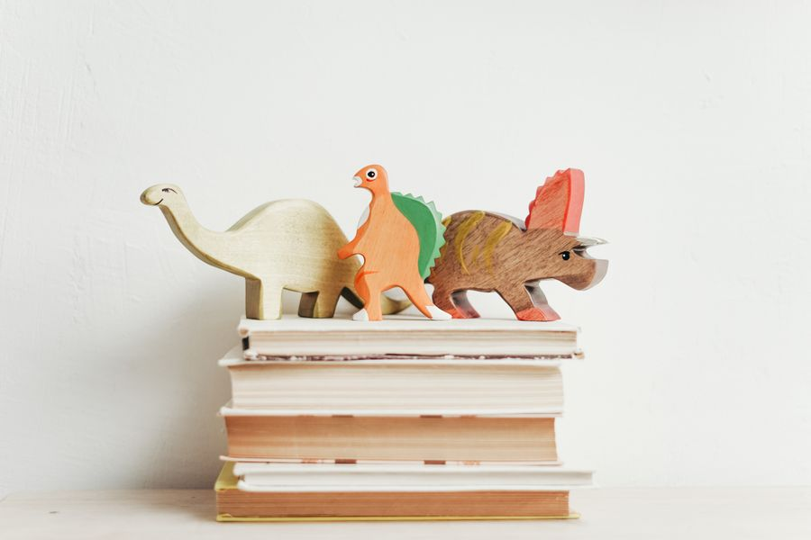
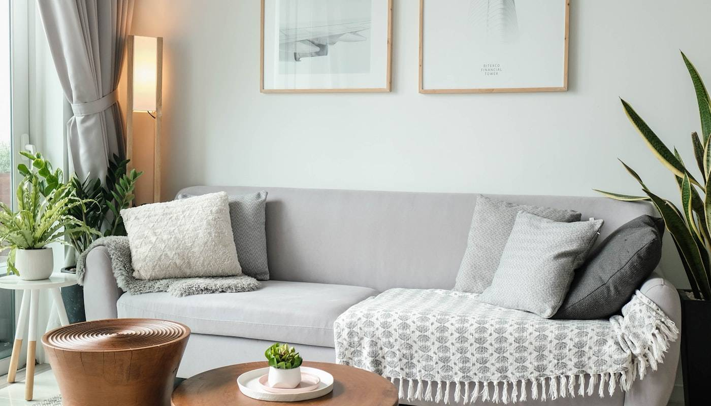
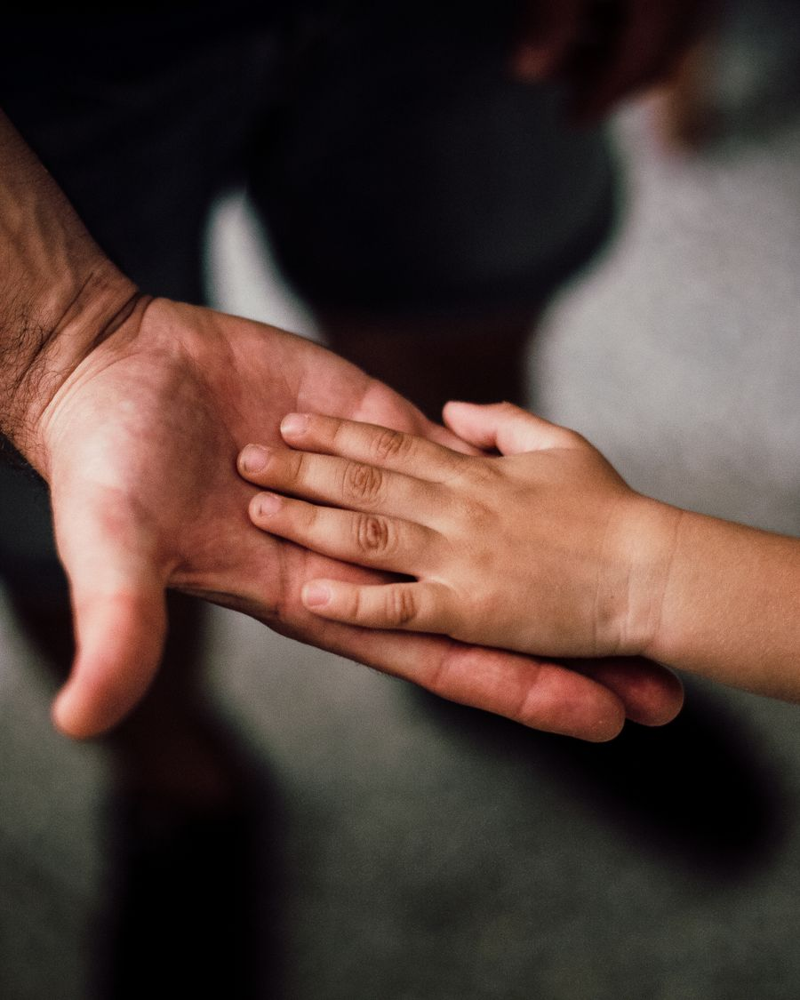
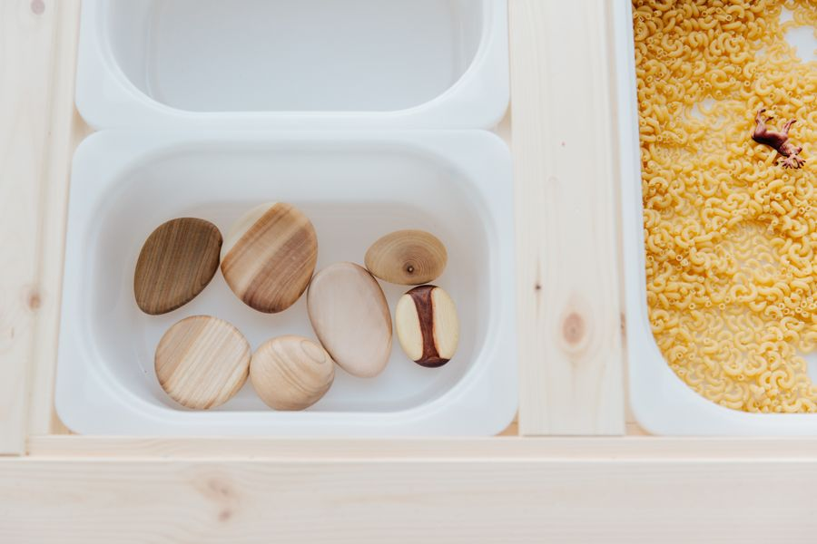

Aile Danışmanlığı
Aile içi iletişimin tıkandığı, herkesin haklı ama kimsenin huzurlu olmadığı dönemlerde; birlikte yeniden konuşmayı öğrenmek için.
Bursa · Aile, Ergen & Çocuk Danışmanlığı
Kaygının, mesafenin ya da tekrarlayan tartışmaların ortasında kaldığınızda; yargılamadan dinleyen, ailenizin kendi gücünü yeniden bulmasına eşlik eden bir danışmanlık. Bağlanma temelli, sıcak ve gerçekçi.
Hakkımda
Kurucu · Aile, Ergen ve Çocuk Danışmanı
Okul öncesi öğretmenliği ve on beş yıllık eğitimcilik geçmişimin ardından, son beş yıldır tüm zamanımı ailelere ayırıyorum. Psikoloji yüksek lisansımı masal terapisinin akışta kalmaya katkısı üzerine tamamladım; üç erkek çocuğun annesi olarak, bir ailenin içindeki yorgunluğu da, umudu da yakından tanıyorum.
Çalışmamın merkezinde bağlanma var: çocukların, eşlerin ve ebeveynlerin birbirine güvenle tutunabildiği o ince bağı onarmak. Hızlı reçeteler yerine, her aileye özel, sabırlı ve yargısız bir süreç kuruyorum — değişimin kalıcı olması için.
Çalışma Alanlarım
Hangi konuda olursa olsun, başlangıç noktası aynı: güvenli bir alan ve dürüst bir konuşma.
Aile içi iletişimin tıkandığı, herkesin haklı ama kimsenin huzurlu olmadığı dönemlerde; birlikte yeniden konuşmayı öğrenmek için.
Mesafe, kırgınlık ya da tekrar eden tartışmalar... İlişkinizdeki bağı yeniden görünür kılmak ve onarmak üzerine çalışıyoruz.
Kapanan kapılar, anlaşılamama hissi ve kimlik arayışı. Gence yargısız bir alan açarken, aileyle köprüyü ayakta tutuyoruz.
Oyun ve masalın diliyle; kaygı, uyku, davranış ve duygu düzenleme konularında çocuğun kendini güvende hissetmesi için.
"Doğru mu yapıyorum?" sorusunun ağırlığını paylaşmak için. Sınır, şefkat ve tutarlılık arasında kendi dengenizi kurmak.
İlişki biçimimizin köklerine inerek; güvenli bağlanmayı anlamak ve bugünkü ilişkilerde yeniden inşa etmek.
Yaklaşım
Süreç baskı değil, eşlik etmektir. Her adım bir öncekinin üzerine, sizin hızınızda kurulur.
Tanışma ve dinleme. Neyi değiştirmek istediğinizi, hiçbir şeyi acele etmeden konuşuyoruz.
Ailenin bağlanma örüntülerini birlikte görünür kılıyor, asıl ihtiyacı anlıyoruz.
Size özel, sabırlı bir çalışma. Oyun, masal ve konuşma; her aileye uygun yöntemle.
Öğrenilenlerin günlük hayata yerleşmesi. Hedef geçici rahatlama değil, sürdürülebilir huzur.
Aldığım Eğitimler
Bağlanma odaklı modelden oyun ve masal terapisine; her sertifika, ailelerle daha derin ve daha güvenli çalışabilmek için.
Galeri






“Aile, güçlü bir temel ve sağlıklı bir bağlılıkla çocukları desteklemek için birlikte çalışmalıdır.”— Virginia Satir
İletişim
Sorularınızı, kaygılarınızı ya da sadece "nereden başlasam?" demek için yazabilirsiniz. Yargılamadan, sıcak bir konuşmayla karşılıyorum.
Bursa'da yüz yüze veya online görüşme